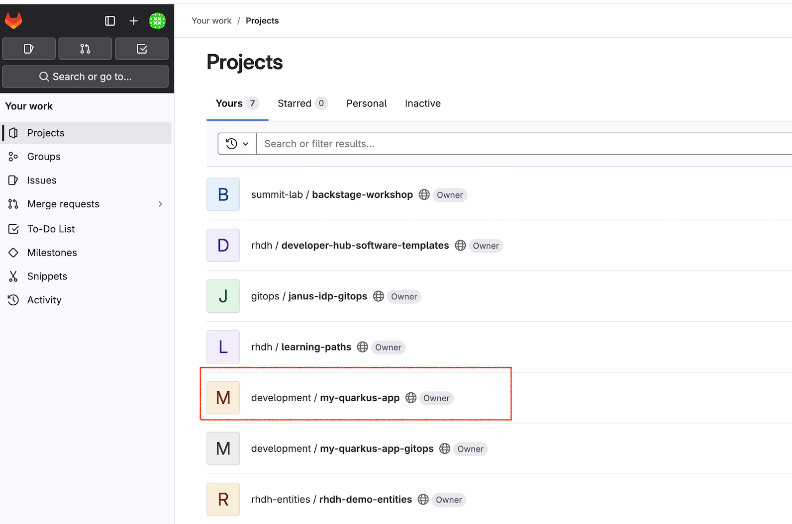
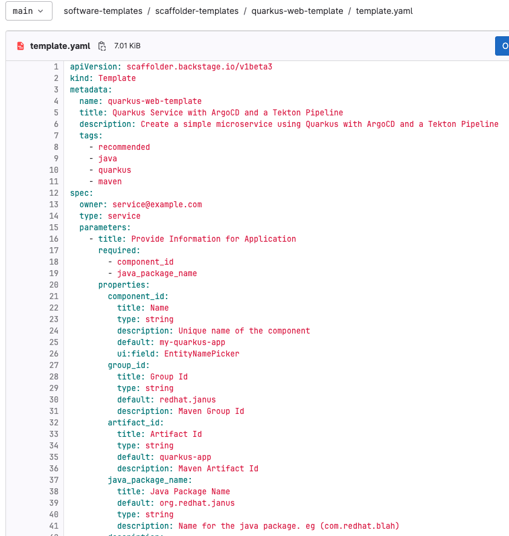
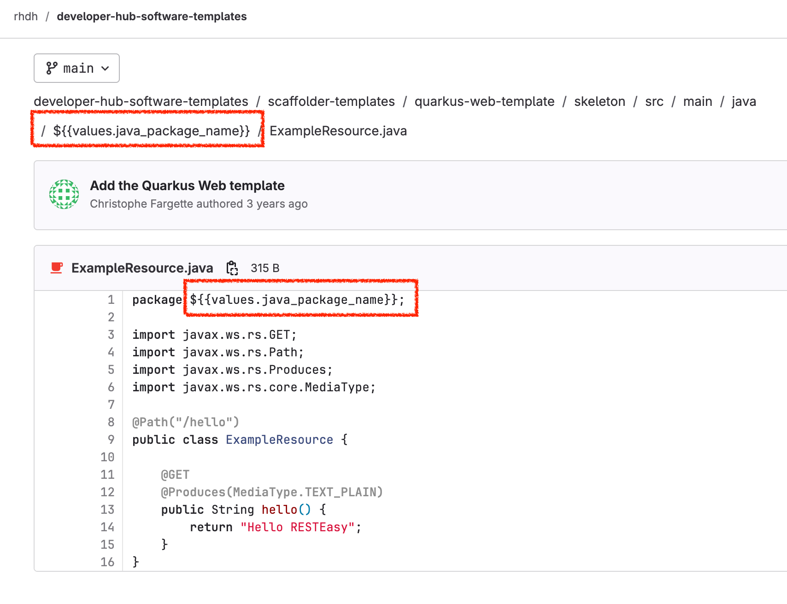
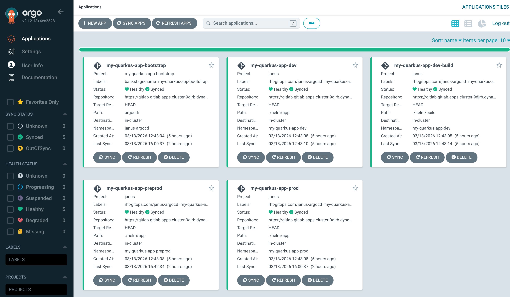
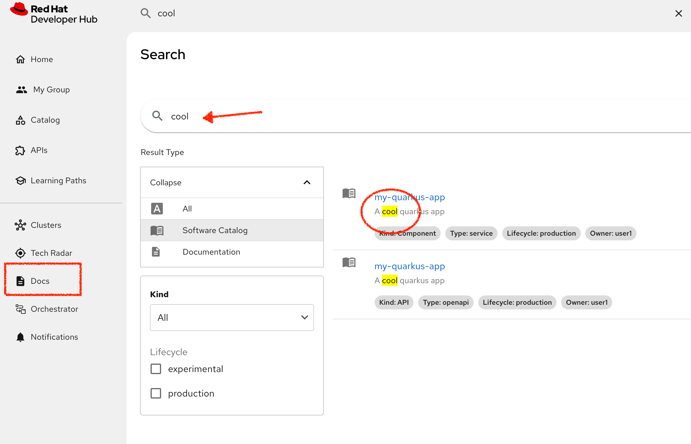
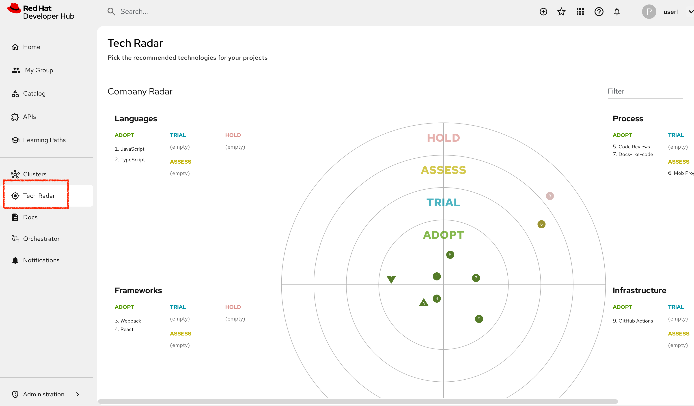
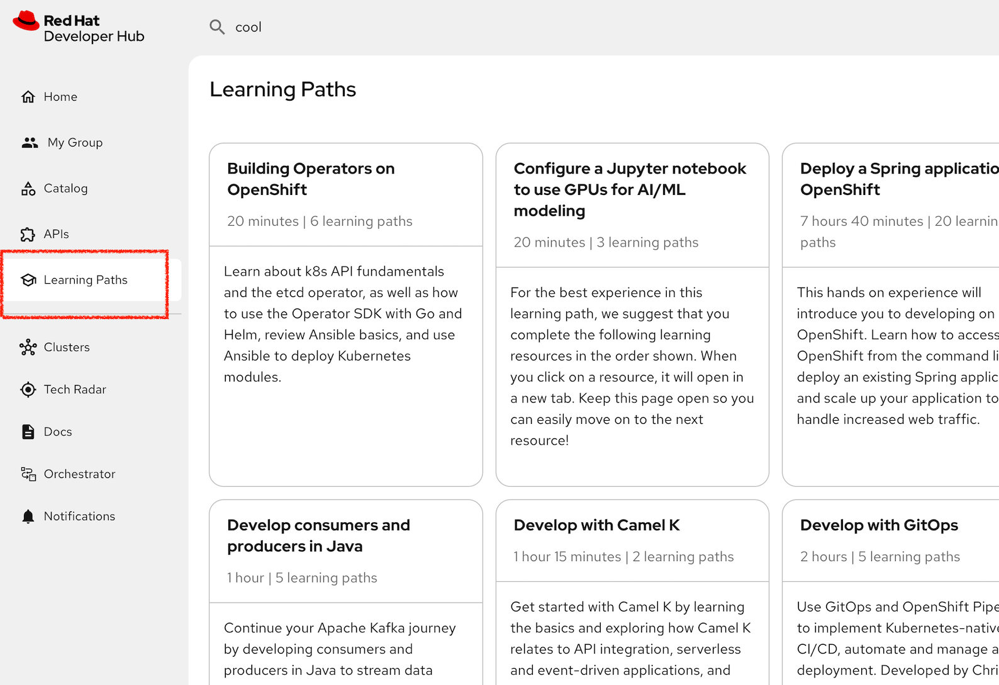

Exploring Developer Hub
Workshop Architecture
The diagram shows all the components that have integrated with Developer Hub for this lab. Now you have experienced a pathway through and populated your Catalog a little, there are now other things to explore.

How does the RHDH Catalog work
To understand how the Catalog sees components and has awareness of its capabilities we have to look at the soure code project that the template created.
Login to GitLab
Login in to GitLab using this link: GitLab
Use the credentials user1 and the password %ADMIN_PASSWORD% to login. However, the likelihood is that your login to RHDH will provide SSO cookies to access GitLab without re-authenticating.
Viewing the Catalog Info file
Earlier, for the application promotion step we landed on the quarkus-app code.

You can see the two new repos created from the template that apply to the quarkus application build. Navigate into the my-quarkus-app.
This hierarchy should match what you saw in the Dev Spaces IDE. In fact if you follow the folder tree into docs you should find the change you made to the index.md file.
At the top level you should find a file catalog-info.yaml. The existence of this file indicates the Catalog is allowed to see this repo. It uses the information inside the file to determine how the the RHDH UI behaves. Look particularly at the annotations. There is typically one for each tab that gets displayed eg. Topology, CI, CD, Image Registry etc.
In our case the catalog-info.yaml has been created by the template, but it is part of the project source so can be modified by the developer to enable features of the RHDH for this project.
Viewing the Software Template
To understand how the template flow just executed works its instructive to look at the components that make it happen. The core of that workflow is the software template (or Gold path) file which we will find in Git. This file has been registered with RHDH as a Template so that it appears in the Catalog correctly and can be executed.
Login to GitLab
Login in to GitLab using this link: GitLab
Use the credentials user1 and the password %ADMIN_PASSWORD% to login. However, the likelihood is that your login to RHDH will provide SSO cookies to access GitLab without re-authenticating.
On the GitLab home screen, you will be presented with the two template projects that are provisioned in this lab.
Click on rhdh / developer-hub-software-templates navigate to scaffolder-templates / quarkus-web-template / template.yaml

Preview the template and identify the template parameters which will be used in RHDH to create your software component. You should see near the top the list of parameters required to execute the template, most were filled in by the user, or even pre-filled by default. The whole experience is under template control, from the hints and documentation, and if needed, drop down boxes and chooser UI.
In this example of creating a new project, this may not be a frequent occurrence, but it requires precision and can be messy to unpick on error. Its good to invest time in this type of template to reduce user errors and support and make the activity as self-service as possible.
Viewing the Source Code
You can see the two new repos created from the template that apply to the quarkus application build. Navigate into the my-quarkus-app.
Descend down to src / main / java / org.redhat.janus
and then view the file ExampleResource.java
Notice how the package name has been set to match the values entered in the template. However this was one of the defaults. One of the features of the templating process is the ability to align the packages according to your needs. This is achieved through a code skeleton.
Viewing the Code Skeleton
The source code is generated for the my-quarkus-app by processing a skeleton code tree that exists here in the template library:
Navigate to:
developer-hub-software-templates / scaffolder-templates / quarkus-web-template / skeleton / src / main
This is where the source code package is generated. Note how the package name is parameterized in the folder name ie ${{values.java_package_name}}
Step into this folder to find the file ExampleResource.java again, if you look at that file, it also has the package parameterized.
This means as part of the software template execution we can perform a number of scripted transformations on the code based on the template input.

Viewing the ArgoCD Orchestration
The template orchestration is performed by ArgoCD, and this is visible in the RHDH Catalog overview. However, we can also login into the ArgCD application running on OpenShift to see the full story.
Login to ArgoCD
Login in to ArgoCD using this link: ArgoCD
Use the credentials admin and the password %ADMIN_PASSWORD% to login.

Logging into ArgoCD reveals the familiar Applications layout. All of these components have been created by the template, and placed in the my-quarkus-app-gitops folder to drive the creation of the pipelines and to manage the application deployment.
This really only confirms what we knew from the RHDH CD tab, however, as an admin here you have more visibility, and scope to break things so beware
Viewing from OpenShift
We can also see all the RHDH activity from an OpenShift perspective. This allows us to view the various artifacts created by the software template such as project, pipelines and deployed applications.
Login to OpenShift Console
Login in to Developer Hub using this link: OpenShift Console
Use the credentials user1 and the password %ADMIN_PASSWORD% to login. Sometimes the SSO credentials you have for GitLab will login you in by default as user1 which is a non-privileged user.
The OpenShift web console allows you to explore the deployment, pipelines and runtime environment with more visibility than the RHDH Topology tab which is configured to be quite selective on how it represents the kubernetes environment.
From OpenShift you can see all your individual projects and the pods running in them for a behind the scenes view.
For example if you navigate to the my-quarkus-app-dev Project and then from the side bar menu selected Workloads | Topology you will see 3 things running in the project.
-
The quarkus-template pod as expected
-
An event listener which is triggered by the GitLab webhooks
-
A Job used to help setup the project
Also note that each running pod has its own project for dev, prod and pre-pod
Viewing the RHDH TechDocs
The TechDocs feature of RHDH scans all of the available components in the Catalog and indexes them for easy search. Now in this example the Catalog is very small, but you should still be able to search for some of the documentation fields.
In addition, you can use the Docs tab in the Catalog for the my-quarkus-app to see the specific docs for that app. Here you should be able to see the code change you made earlier to index.md

Viewing the RHDH TechRadar
The TechRadar view allows the owner of the RHDH instance to recommend development technologies to all their users.

Viewing the RHDH Learning paths
The Learning Path section can be disabled, but in our example we use it to link to a selection of Red Hat Developer articles and learning activities on the Red Hat web site.
These tiles can be configured locally to suggest static learning links for your developers to follow.

Wrap Up
As you can see Developer Hub is a great place to bring all things together for your developers so that they have observability over their systems, can collaborate through the Git based Catalog. They can quickly onboard with software templates or make self-service requests for infrastructure.